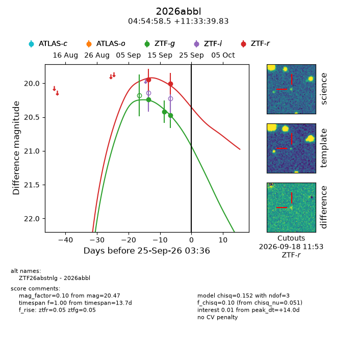
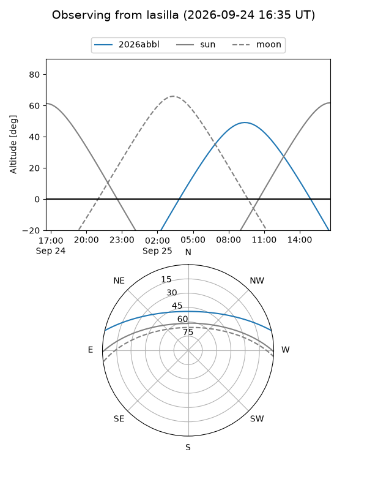
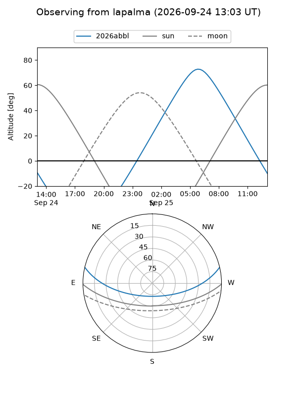
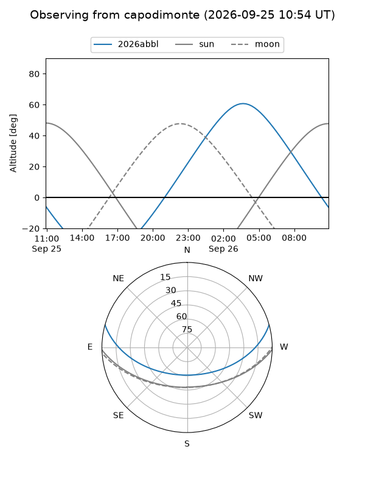
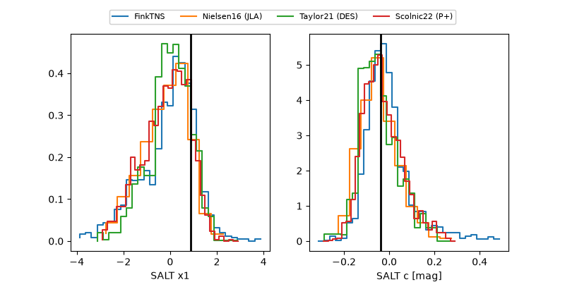

2026abbl
Target 2026abbl at 2026-09-25 15:13
Aliases and brokers:
FINK-ZTF: ztf.fink-portal.org/ZTF26abstnlg
Lasair-ZTF: lasair-ztf.lsst.ac.uk/objects/ZTF26abstnlg
ALeRCE-ZTF: alerce.online/object/ZTF26abstnlg
YSE-PZ: ziggy.ucolick.org/yse/transient_detail/2026abbl
TNS name: wis-tns.org/object/2026abbl
Direct TNS query: direct search
alt names
ZTF26abstnlg (ztf,fink_ztf)
2026abbl (tns,yse)
Coordinates:
equatorial (ra, dec) = 73.7437,+11.56106
equatorial (HMS+DMS) = 04:54:58.50,+11:33:39.83
galactic (l, b) = (188.1184,-19.44342)
Flags:
TNS type: nan
peak dt: +14.4
Photometry:
last ztfg=20.47, ztfr=20.01
3 ztfg, 2 ztfr detections
Lightcurve

Visibility



Additional plots
